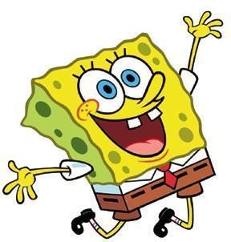

- 뚱이
- 스폰지밥
- 징징이
- 집게사장
스폰지밥
본작은 주연 캐릭터와 다양한 친구들을 중심으로 전개된다. 스폰지밥 스퀘어팬츠는 파인애플 모양의 집에 살며 집게리아(영어: Krusty Krab 크러스티 크랩[*])에서 요리하는 것을 좋아하는 활기차고 낙관적인 성격의 바다 스펀지이다(외모는 주방용 스펀지에 더 가깝다). 그는 애완동물로 달팽이인 핑핑이(Gary→개리)를 키우고 있다. 뚱이(Patrick Star→패트릭 스타)는 불가사리이며 스폰지밥의 베스트 프랜드이다. 덧붙여, 패트릭은 정신적으로 이상한 면이 있으나 자신이 똑똑하다고 생각한다.[5] 징징이(Squidward Tentacles→스퀴드웰드 텐태클)는 스폰지밥의 이웃이자 동료이다.
